Rozmowa
Poznaję Twoje potrzeby, sposób życia i warunki działki. Opowiadasz, jak chcesz korzystać ze swojego ogrodu.
INDYWIDUALNE PROJEKTY OGRODÓW · WROCŁAW
Projektuję ogrody przydomowe we Wrocławiu i okolicach — pełne zieleni i wygodne do życia. Układ ogrodu, rośliny i materiały dobieram do Twoich potrzeb oraz warunków działki.
Wrocław, Polska, Europa
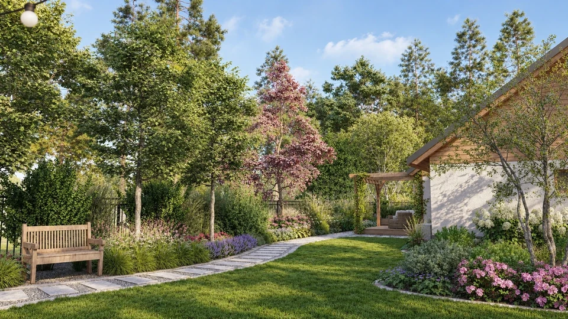
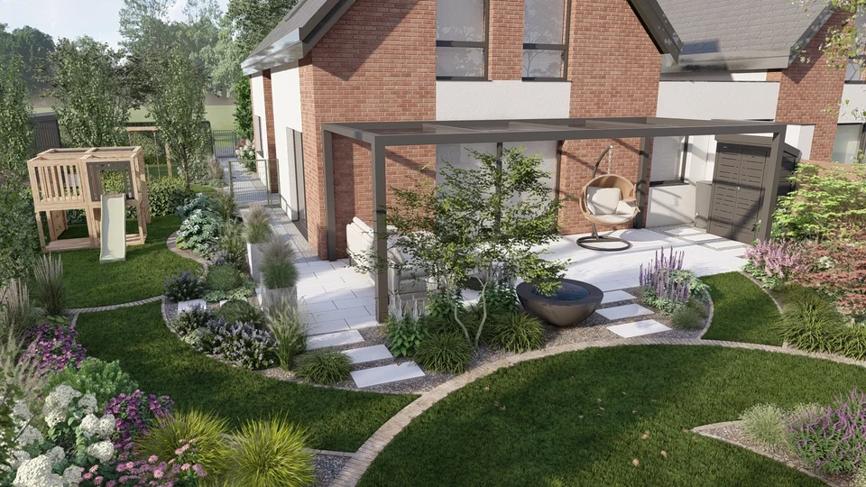
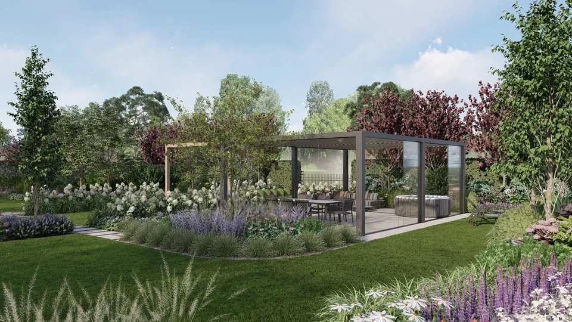
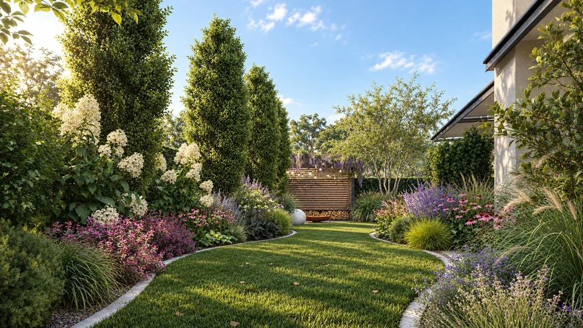
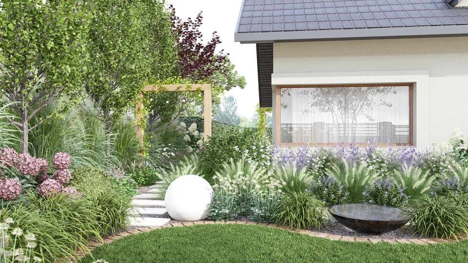
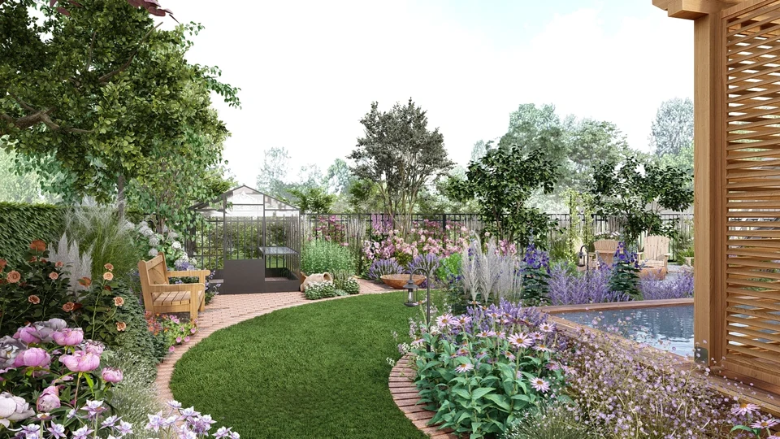
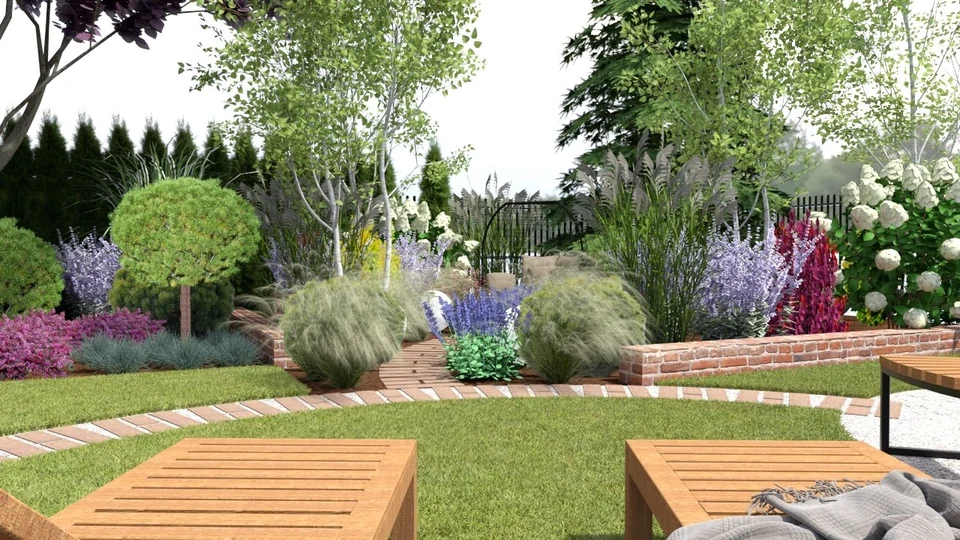
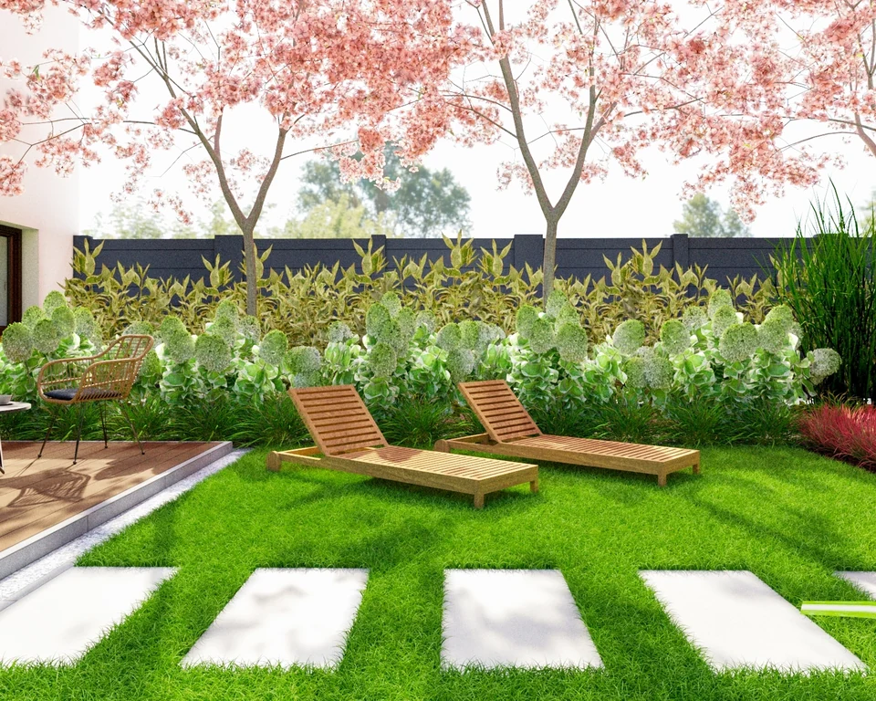
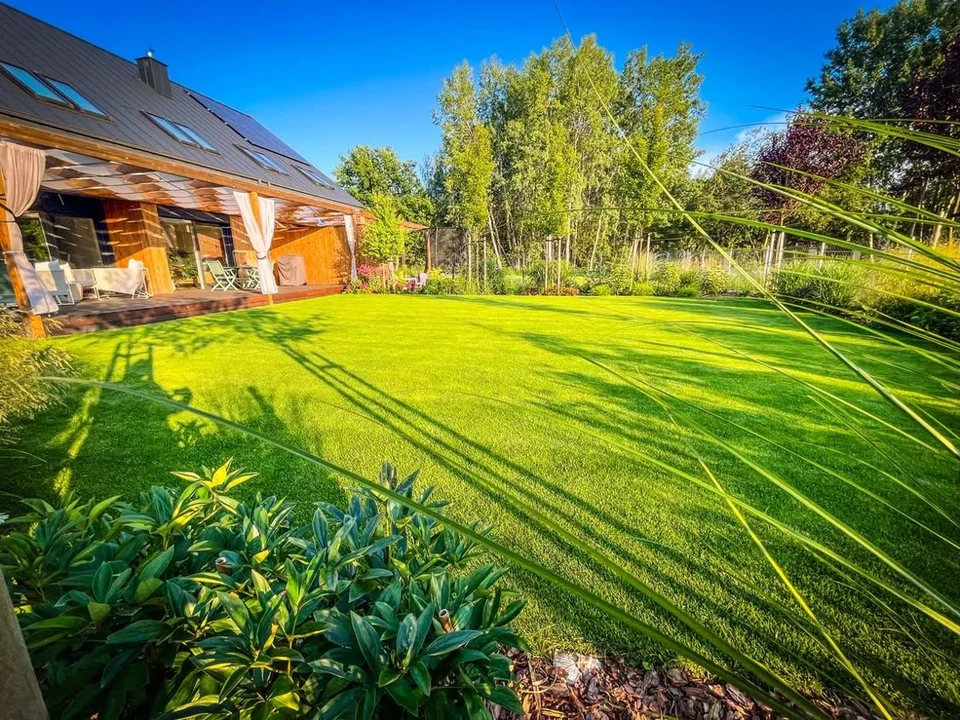
EWA KATRYCZ · EFFKOWE OGRODY
Jestem projektantką ogrodów i tworzę Effkowe Ogrody. Wychowałam się w rodzinie ogrodników, choć jako dziecko zarzekałam się, że nigdy nie będę miała własnego ogrodu. No cóż… życie napisało nieco inny scenariusz!
Dziś mój ogród we Wrocławiu jest nie tylko miejscem, w którym uwielbiam spędzać czas, ale też moją największą inspiracją i wizytówką tego, co robię.
Z wykształcenia jestem inżynierką środowiska oraz projektantką ogrodów a doświadczenie zdobywałam również przy projektowaniu architektury kubaturowej. Dzięki temu patrzę na ogród nie tylko przez pryzmat roślin, ale też funkcjonalności całej przestrzeni.
Kocham drzewa, bujne rabaty i naturalne kompozycje. Projektując, staram się tworzyć ogrody, które są nie tylko piękne, ale przede wszystkim wygodne do życia. Bo ogród ma służyć ludziom, a nie tylko dobrze wyglądać na zdjęciach.
MÓJ OGRÓD
To ogród, który możesz znać z mojego Instagrama. Tworzę go, pielęgnuję i obserwuję, jak zmienia się z porami roku. Są tu bujne rabaty, miękkie linie i zakątki, w których lubię odpoczywać — wszystko to, co jest mi bliskie również w projektowaniu.
Tutaj sprawdzam, jak rośliny rosną obok siebie, jak dojrzewają kompozycje i czego ogród potrzebuje na co dzień. Te doświadczenia zabieram ze sobą do pracy nad ogrodami moich klientów, dopasowując rozwiązania do ich życia i miejsca.
Zajrzyj do mojego ogrodu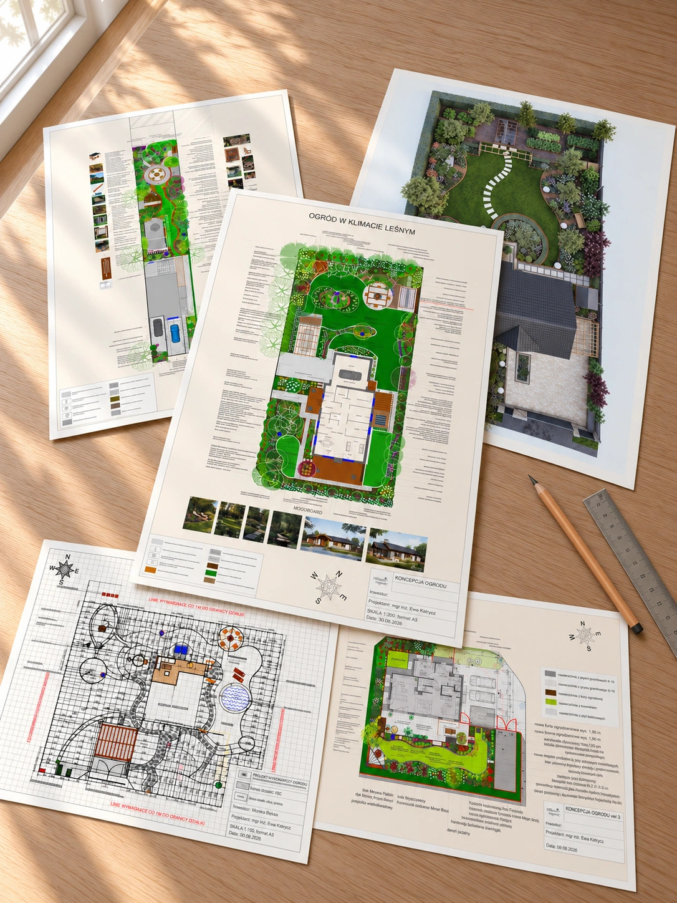
INDYWIDUALNY PROJEKT OGRODU
O tym, co lubisz, jak odpoczywasz i czego potrzebujesz wokół domu.
Pomagam uporządkować pomysły i stworzyć spójną przestrzeń: z wygodnym miejscem wypoczynku, przemyślanymi ścieżkami i roślinnością dopasowaną do warunków działki. Łączę bujne nasadzenia z funkcjonalnym układem, uwzględniając również czas, który chcesz poświęcać pielęgnacji.
Indywidualny projekt pozwala zobaczyć przyszły ogród i zaplanować kolejne kroki jego tworzenia.
Projekt to nie tylko wizualizacja.To plan, który ma dobrze działać również po posadzeniu ostatniej rośliny.
II / WSPÓŁPRACA
Poznaję Twoje potrzeby, sposób życia i warunki działki. Opowiadasz, jak chcesz korzystać ze swojego ogrodu.
Ustalamy zakres współpracy. Porządkujemy pomysły, układ przestrzeni i najważniejsze decyzje.
Opracowuję rozwiązania dopasowane do działki. Omawiamy propozycje i dopracowujemy koncepcję.
Otrzymujesz uzgodnione opracowanie i jasny plan dalszego działania. Możesz skorzystać ze wsparcia podczas realizacji.
Czas i zakres poszczególnych etapów ustalamy indywidualnie.
Umów pierwszą rozmowęOPINIE KLIENTÓW
Fragmenty wiadomości od osób, dla których projektowałam ogrody.
Jesteśmy pod ogromnym wrażeniem Pani pracy, zaangażowania i dopasowania do potrzeb klienta. Cieszę się, że jednak zdecydowaliśmy się na wykonanie profesjonalnego projektu bo już widzę, że ułatwia to nie tylko zakup roślin ale również organizację i kolejność działań. Dla mnie osobiście to dodatkowy komfort i spokój ducha.
od lutego działam według planu i to daje mi taki święty spokój. Wiem co kupić, wiem gdzie posadzić i wiem że będzie genialnie :)
Bardzo Pani dziękuję za wykonanie projektu i profesjonalizm. Już się nie mogę doczekać tej pięknej zieleni 😀 Wiem, że będzie cudownie. Powoli już mogę się rozglądać w internecie za roślinkami.
wygląda to wszystko naprawdę niesamowicie i będę chyba najszczęśliwszym człowiekiem świata jak wprowadzę ten projekt w życie i będę mogła obserwować jak to wszystko pięknie razem pracuje i jak się komponuje, naprawdę BOMBA.
W wielkim skrócie: koncepcja bardzo nam się podoba, różnorodność nasadzeń ale i powtarzalność, która spaja to wszystko w jedną całość jest super. Dziękuję za wysłuchanie naszych potrzeb
Życzę pani powodzenia w rozwijaniu własnej marki, ma pani talent wiedzę i zaangażowanie a to przepis na wielki sukces!!!
PYTANIA PRZED ZAMÓWIENIEM
Co warto wiedzieć przed rozpoczęciem pracy nad Twoim ogrodem.
Każdy projekt wyceniam indywidualnie. Cena zależy od powierzchni ogrodu, zakresu opracowania i złożoności planowanych rozwiązań. Napisz, gdzie znajduje się działka, jaką powierzchnię chcesz zagospodarować i czego potrzebujesz. Na tej podstawie ustalimy zakres współpracy i przygotuję ofertę.
Zakres ustalamy przed rozpoczęciem współpracy i opisuję go w ofercie. Może obejmować układ funkcjonalny ogrodu, czyli koncepcję ogrodu, wizualizacje, projekt wykonawczy ogrodu, czyli plan nasadzeń z zestawieniem roślin oraz uzgodnione rysunki dotyczące nawierzchni i pozostałych elementów zagospodarowania. Dzięki temu od początku wiesz, jakie materiały otrzymasz i do czego będą Ci służyć.
Warto pomyśleć o ogrodzie już podczas projektowania lub budowy domu, zanim powstaną docelowe nawierzchnie i instalacje zewnętrzne. Pozwala to wcześniej skoordynować ważne rozwiązania. Jeśli dom jest już gotowy albo ogród istnieje od lat, również możemy zaplanować jego urządzenie lub zmianę. Mój kalendarz projektowy zapełnia się z wyprzedzeniem, dlatego najlepiej skontaktuj się ze mną co najmniej 6 miesięcy przed planowanym terminem otrzymania gotowego projektu. Jeśli zależy Ci na wcześniejszym terminie, napisz, sprawdzę aktualną dostępność.
Na początek wystarczą lokalizacja, przybliżona powierzchnia ogrodu, kilka zdjęć i krótki opis Twoich potrzeb. Pomocne będą również plan działki z usytuowaniem domu oraz inspiracje pokazujące, co Ci się podoba. Po ustaleniu zakresu projektu wskażę, jakie dodatkowe materiały i pomiary będą potrzebne.
Tak, możliwa jest również współpraca zdalna. Wymaga ona odpowiednich materiałów o działce, w szczególności planu, zdjęć i potrzebnych pomiarów. Przed rozpoczęciem pracy ustalamy sposób zebrania tych informacji oraz prowadzenia konsultacji, tak aby projekt uwzględniał rzeczywiste warunki miejsca.
Czas zależy od wielkości ogrodu, zakresu dokumentacji oraz przebiegu uzgodnień. Termin rozpoczęcia pracy i orientacyjny harmonogram podaję przy ustalaniu współpracy. Jeśli zależy Ci na urządzeniu ogrodu w konkretnym sezonie, napisz o tym już w pierwszej wiadomości.
Tak, omówienie propozycji jest ważną częścią współpracy. Twoje uwagi pomagają dopasować rozwiązania do tego, jak chcesz korzystać z ogrodu. Nie mam limitu zmian w koncepcji ogrodu, dopracowujemy idealną wersję, która finalnie będzie spełniać Twoje oczekiwania.
Tak, już na początku rozmawiamy o tym, ile czasu chcesz poświęcać ogrodowi. Uwzględniam to przy planowaniu rabat, doborze roślin i rozwiązań ułatwiających pielęgnację. Każdy ogród wymaga opieki, ale przemyślany projekt może ograniczyć ilość pracy i dopasować ją do Twojej codzienności.
Współpracuję z firmą zajmującą się wykonawstwem ogrodów we Wrocławiu i okolicach. Jeśli chcesz powierzyć realizację projektu ekipie wykonawczej, pomogę Ci nawiązać kontakt. Zakres prac, wycenę i termin realizacji ustalisz bezpośrednio z wykonawcą.
Nie znajdujesz odpowiedzi na swoje pytanie?
Napisz do mnieKONTAKT
Kilka informacji o działce i Twoich planach pomoże mi przygotować ofertę.
POZOSTAŁA OFERTA
SOCIAL MEDIA
Śledź mnie.
Na Instagramie i Facebooku pokazuję ogrody, rośliny, gotowe rabaty i codzienną pracę nad projektami. To dobre miejsce, żeby poznać styl Effkowe Ogrody jeszcze przed pierwszą rozmową.
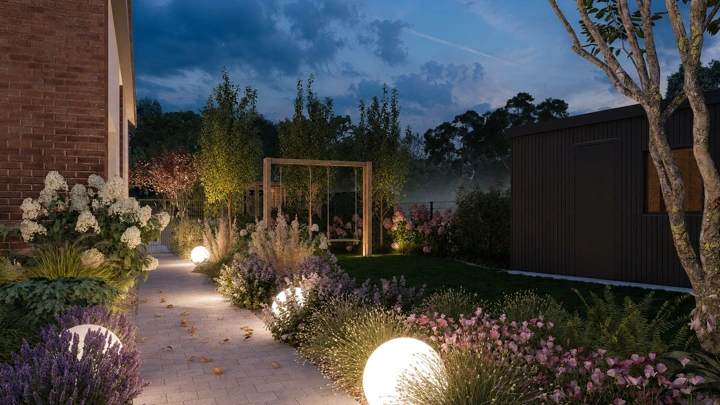
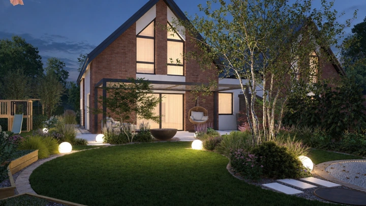
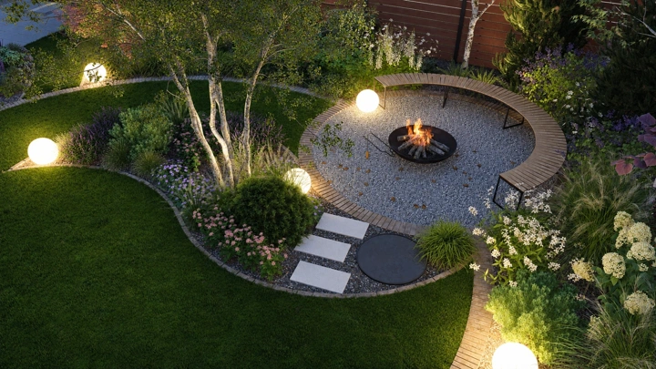
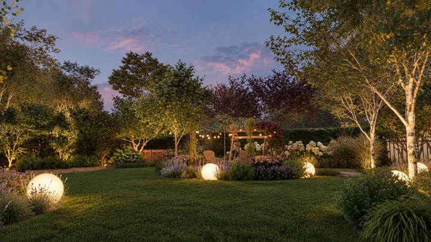
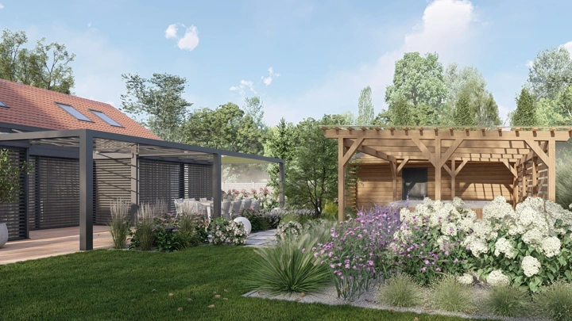